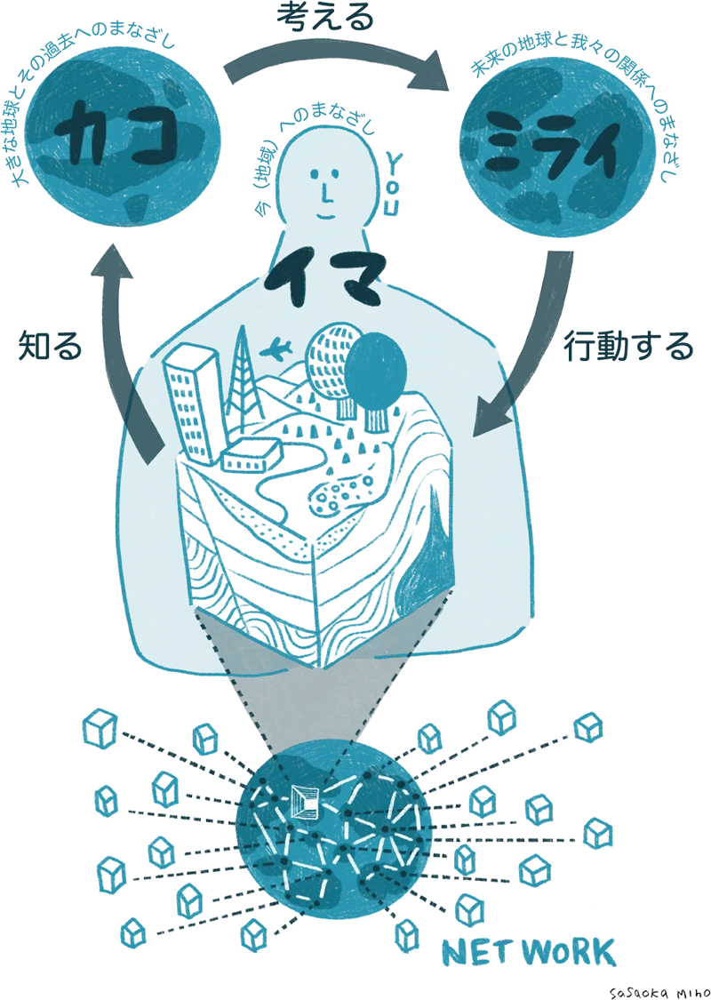
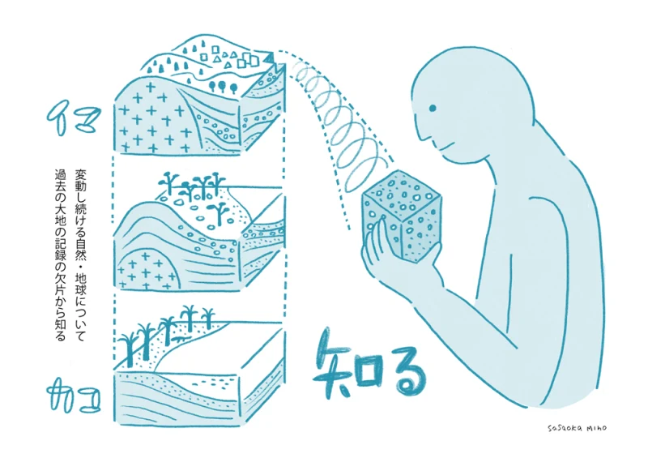
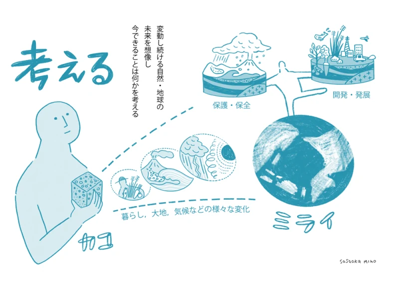
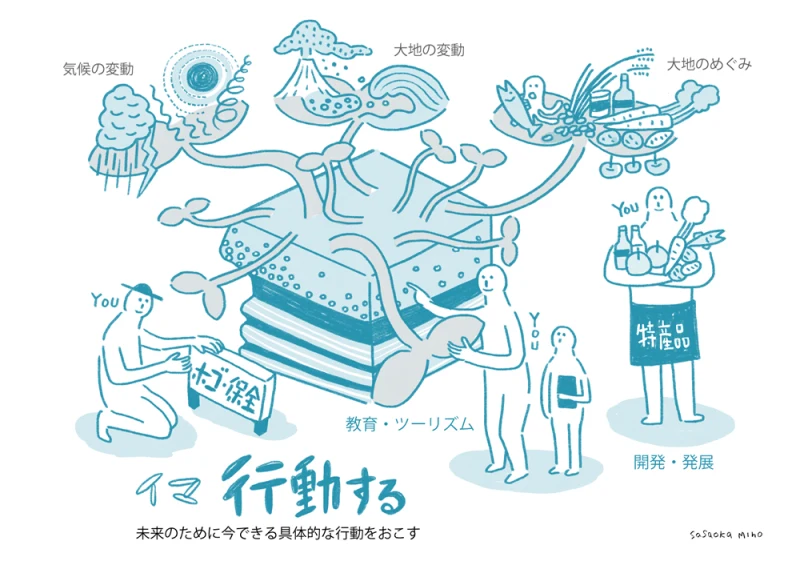

Mine秋吉台ってなに？
大地の成り立ちと、人々のくらしの物語


Mine秋吉台ジオパークとは

Mine秋吉台ジオパークは、日本最大級のカルスト台地「秋吉台」を中心とする、山口県美祢市のジオパークです。
美祢の大地の成り立ちは、白・黒・赤の3つの色で知ることができます。
白白い大地石灰岩
サンゴ礁がもとになった白い石。秋吉台のカルスト地形をつくりました。
黒黒い大地無煙炭
大昔の植物が積み重なってできた石炭。大嶺炭田で掘られました。
赤赤い大地銅
火山の活動でできた銅。長登銅山の銅は奈良の大仏にも使われました。
ジオパークってなんだろう？
大地・自然・くらしは つながっています
足もとの大地から、地球の昔と未来を知る場所です。
ジオパークは、大地の成り立ちを知り、未来を考えて行動する場所です。「ジオ」は地球、「パーク」は公園という意味です。
山や川、岩のかたちは、何千万年もかけてできました。その大地の上で生き物が育ち、人のくらしや文化が生まれました。
ジオパークでは、地域の人が中心になって、大地を守り、学び、生かしています。
ジオパークでできること

1大地の歴史を学ぶ
岩や地形を見て、地球の長い歴史を知ることができます。

2ジオガイドと歩く
「地球の語り部」であるジオガイドが、土地の物語を案内します。

3見方を変えて旅をする
石や土に目を向けると、いつもの景色が「ここにしかない風景」に変わります。

4未来のために行動する
大地や自然を守り、災害にそなえるために、今できることを考えます。
ユネスコ世界ジオパークとは
2015年からユネスコの正式なプログラムになり、世界共通の基準で認定されます。Mine秋吉台ジオパークは、2026年4月23日に、日本で11番目のユネスコ世界ジオパークに認定されました。
出典：日本ジオパークネットワーク「ジオパークとは」
ジオガイドと歩く ジオツアーを見る ▲ 目次へもどるMine秋吉台ジオパークの基本理念
わたしたちは、3つのことを大切にして、持続可能な地域づくりをめざしています。
- 1
保全 （まもる）
大地と文化を守り、次の世代へ受けつぎます。
- 2
教育 （まなぶ）
子どもたちに、大地と文化のたいせつさを伝えます。
- 3
地域振興 （いかす）
大地と文化を生かして、地域を元気にします。
Mine秋吉台ジオパーク憲章
憲章の全文は公式サイトに掲載しています。スマホで読みとってご覧ください。
Mine秋吉台地域の大地と人々の物語
カルスト台地に息づく地球と生命の歴史
〜地球に寄り添い、人と支え合う〜
- 約100km²秋吉台の広さ
- 約3億5千万年前サンゴ礁が生まれた
- 東台・西台川をはさんで2つに
秋吉台ができるまで
- 1約3億5千万年前海の火山島のまわりに、サンゴ礁ができる
- 2長い年月をかけて海洋プレートに乗って運ばれ、大陸にくっつく（付加）
- 3数百万年雨水や地下水が石灰岩をとかし、ドリーネや鍾乳洞ができる
- 4いま東台の草原は守られ、西台では石灰石の採掘や湧き水がくらしを支える
美祢の大地には、ほかにも
- 海洋プレートのかけら
- 石炭・植物の化石
- 銅・銀の鉱床